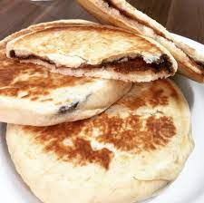

Hotteok (호떡)

What is Hotteok?
Hotteok is a popular Korean street food, often called a sweet Korean pancake. They usually include brown sugar, cinnamon powder, and some grounded nuts.
Ingredients
Main
- 1 1/4 cup all purpose flour
- 1/2 tsp fine sea salt
- 1 tsp white sugar
- 1 tsp instant dry yeast
- 1/2 cup lukewarm milk
- Some cooking oil
For Filling
- 1/4 cup dark brown sugar
- 1/2 tsp cinnamon powder
- 2 tbsp crushed nuts of your choice
Instructions
- Sieve through flour into a bowl, then add salt, sugar, yeast, and milk. Mix well, then cover bowl with plastic. Ferment until double in size.
- When dough is raised, punch the dough a few times to release gas, cover again and let rest for 20 minutes.
- Put some cooking oil on hands, then seperate the dough into 6 pieces.
- Flatten a piece of dough, then add about 1 tbsp of filling into it. Seal the doughby gathering the corners. Repeat this step for the remaining dough.
- Pre heat frying pan on medium heat. When heated, add thin layer of cooking oil.
- Place dough onto pan. Cook until bottom is golden brown. Flip it over and press. Cook until bottom side is golden brown.
- Flip it again, then turn to low heat. Cover top of pan and let it cook until all sugar filling is melted.
- Place pancake onto a plate and repeat the last 2 steps for remaining dough.